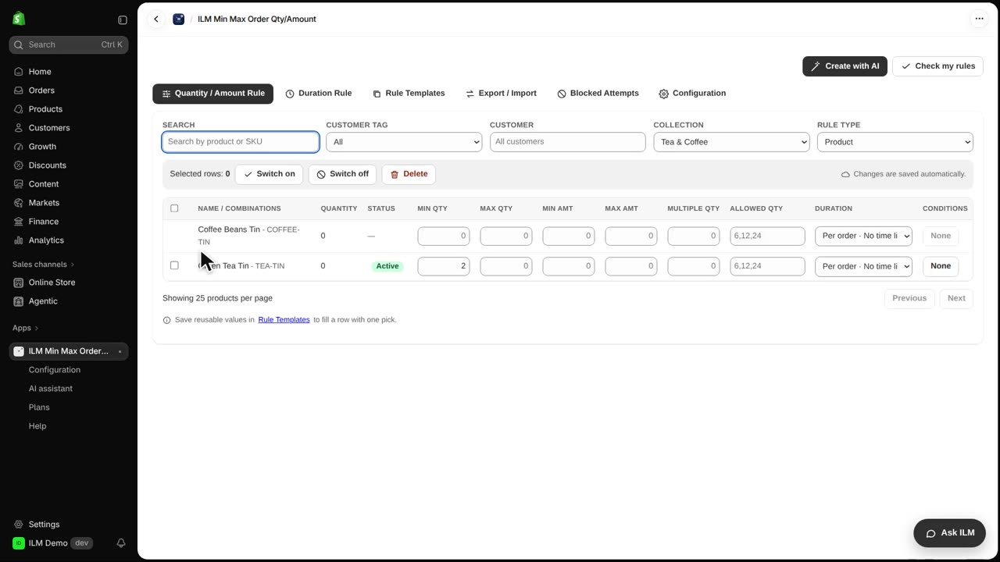
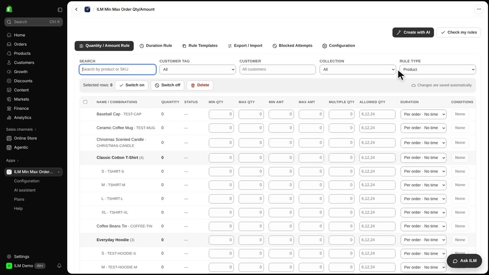
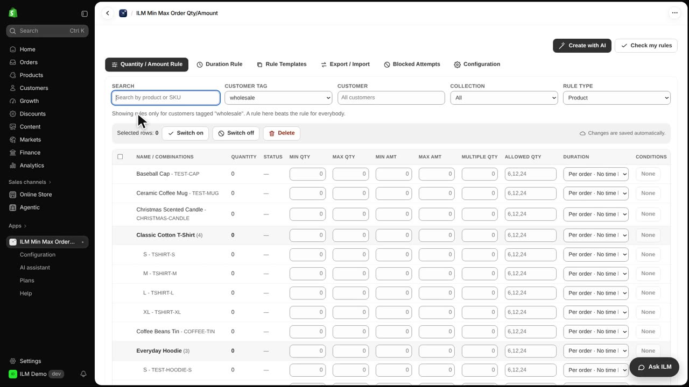

The filters above the rule grid help you find products and rules in a big store. When a shop has hundreds of products and many quantity rules, scrolling to find one rule is slow and error prone. These filters narrow the table down to exactly the products or rules you want to edit. Today we will use the ILM Demo store, where the T-shirt and the Green Tea Tin both have minimum quantity rules, to see how each filter works.
Search finds products by name or SKU. We type Tin, and the table immediately narrows down to the matching products, such as the Green Tea Tin and the Coffee Beans Tin. Use this when you remember part of a product name or its SKU and want to jump straight to its rule.
Now we clear the search box, so the full list comes back. The Collection filter shows only the products of one collection, here Tea and Coffee. Pick a collection and the table shows just the rules for products inside it, which is handy when you set the same limits for a whole category.

Rule Type switches the whole table between products, collections, vendors, product types, customer tags and the global rule. We cycle through Vendor (brand), then Customer tag, then back to Product. Each choice changes what the rows mean, so you always know whether you are looking at a product rule or a store wide rule.

Customer tag shows the rules for customers with one tag, for example your wholesale customers. We select wholesale, and the table shows only the rules that apply to shoppers with that tag. Rules made here only apply to those customers, so your retail shoppers keep their normal limits.
